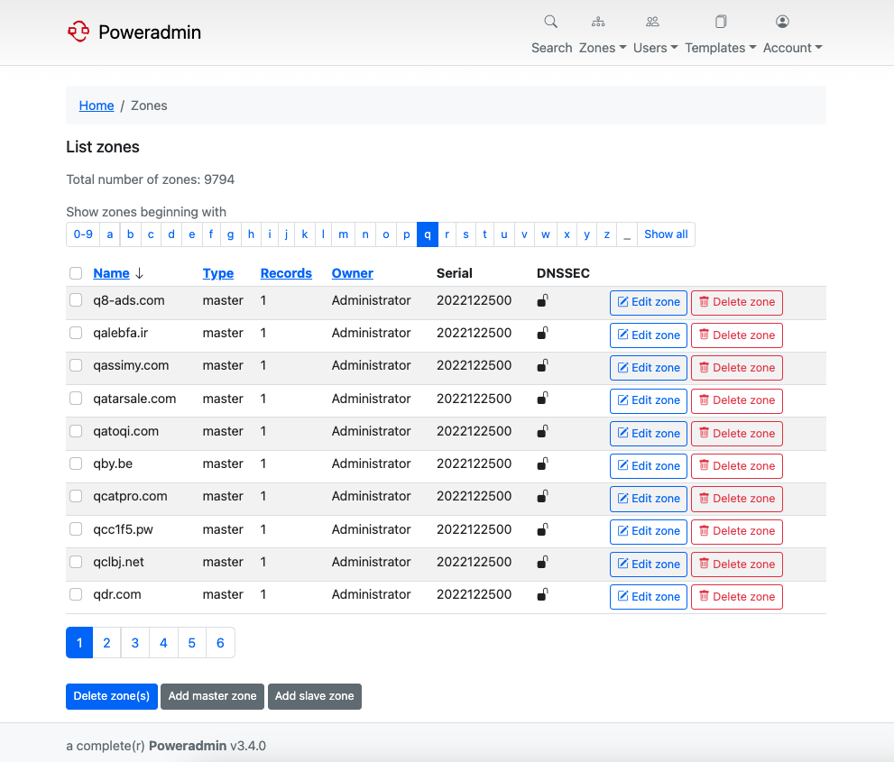

UI Styling
Poweradmin uses built-in themes for its user interface styling. Currently, the application does not support custom CSS files for styling customization.
Available Themes
Poweradmin comes with the following themes, which can be selected in the configuration file:
- ignite (default): A clean, light theme with modern design elements
- spark: A dark theme optimized for reduced eye strain in low-light environments
Theme Configuration
To change the theme, update the theme setting in the config/settings.php file under the interface section:
return [
'interface' => [
'theme' => 'ignite', // Options: 'ignite', 'spark'
],
];
Screenshots
Ignite Theme (Light)

Spark Theme (Dark)
Theme Features
Each theme provides consistent styling for:
- Navigation menus
- Form elements
- Buttons and controls
- Tables and data views
- Modals and dialogs
- Notifications and alerts
For more information about themes, see the Themes documentation.
Future Development
Custom CSS support may be implemented in future versions of Poweradmin. If you need UI customization beyond the available themes, consider:
- Contributing to the Poweradmin project
- Requesting the feature in the project's issue tracker